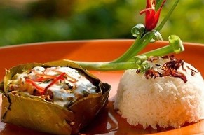
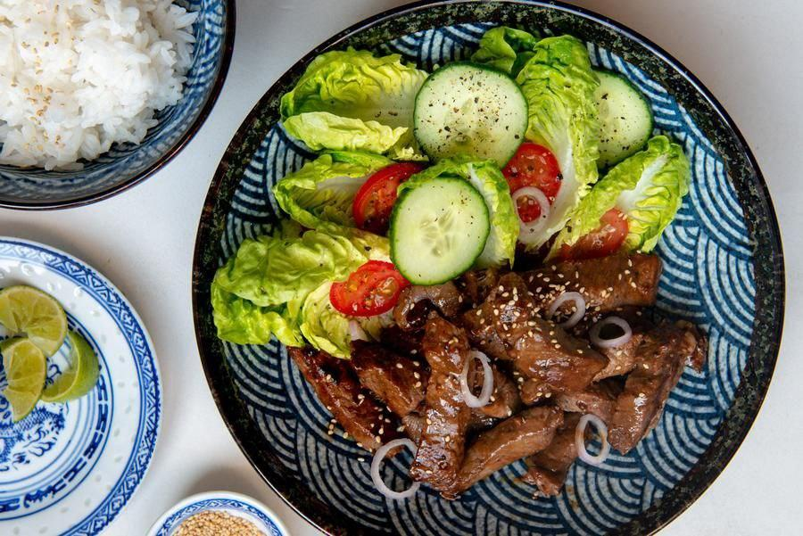
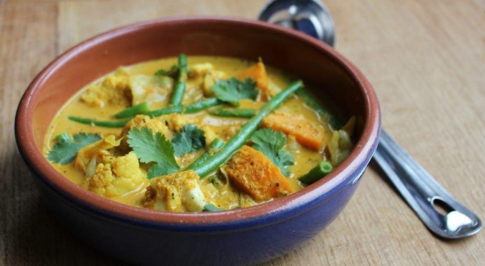
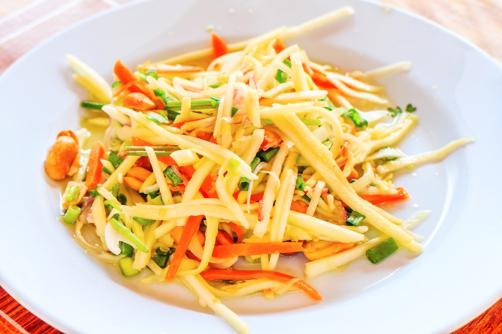

Welcome to Three Brothers Restaurant
Cambodian cuisine may be lesser known than the world-renowned dishes of neighbouring Thailand and Vietnam.
But it's just as delicious. Here are the top 6 best dishes and popular in Cambodia,
with a handful of the weird and wonderful thrown in for good measure.

Amok
Amok is one of the best-known Cambodian dishes,
but you'll find similar meals in neighboring countries.
The addition of slok ngor, a local herb that imparts a subtly bitter flavor,
separates the Cambodian version from the rest of the pack.
Price: 10$

LokLak
Beef Lok Lak.
It appears on the menu of most restaurants in Cambodia but also abroad.
It consists in beef cut into pieces, marinated and then sautéed in a wok before being
served on a bed of green salad with slices of tomatoes and cucumber that bring freshness to the dish.
Price: 5$

Nhom Banh Chok
Nom banh chok is a beloved Cambodian dish,
so much so that in English it's sometimes called simply "Khmer noodles.
It's a typical breakfast food, and every morning you'll find it
being sold by women carrying baskets of fresh rice noodles hanging from a pole balanced on their shoulders.
Price: 2.50$

Curry
Khmer curries tend to use more herbs than spices, and are milder and sweeter in taste.
While recipes vary, the curry normally features chicken, coconut cream and milk; fish sauce; herbs and diced sweet potatoes;
garlic; shallots; turmeric and ginger. It is accompanied by rice or a baguette.
Price: 5$

Green Mango Salad
Cambodian salads are renowned for their refreshing feel while being packed full of punch.
Green mango salad is crunchy and zesty, and features fresh chilli, fish sauce, sliced green mango,
sliced tomatoes and shallots, pickled cucumber, onion, peppers and fresh basil or mint.
Price: 5$

Samlor Machu Trey
Samlor machu trey is a soup that's popular in many households in Cambodia as it’s not only easy to make but also has a lovely taste.
Its ingredients include fish, garlic, lemongrass, celery, tamarind juice,
bean sprouts, pineapple and seasoning with sugar, fish sauce, and salt.
Price: 10$